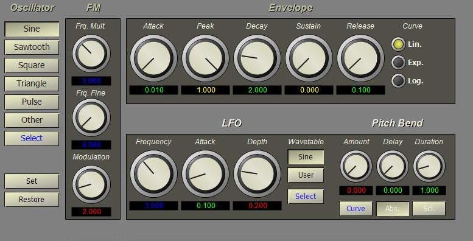

Right-click on the Instrument project item and select New from the popup menu. Enter the name "Plunk" and select an instrument type of ToneFM then press OK. The ToneFM instrument adds a second oscillator that is used as a frequency modulator.
Set the Modulator frequency multiple to 3 and the modulation index to 2. Set the envelope attack to 0.01, peak 1.0, decay 2.0, sustain 0, and release 0.25. Set the depth value on the LFO to 0.2.
Next: Add another voice...